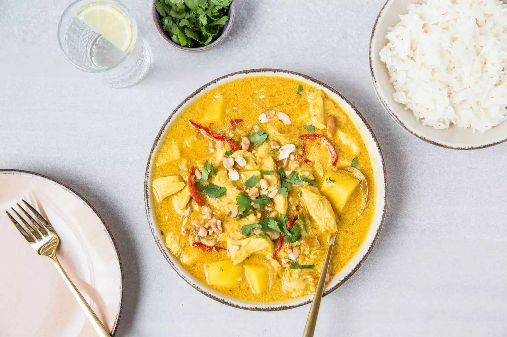

Thai Yellow Curry

Rich & Flavorful with medium spiciness
Thai yellow curry is a delicious and flavorful dish from Thailand. It is made with a base of yellow curry paste, which is a blend of ingredients such as turmeric, cumin, coriander, lemongrass, and other spices. The curry paste is simmered with coconut milk, meat (chicken, beef, or tofu), and vegetables, such as potatoes and carrots, to create a rich and creamy sauce. Thai yellow curry is milder in heat compared to other Thai curries and has a unique and aromatic flavor.
Ingredients:
- 1 pound boneless chicken breasts, cubed
- 2 to 3 potatos, chopped into small chunks
- 2 to 3 carrots, sliced
- 1 cup cherry tomatoes, halved
Yellow Curry Sauce:
- 1 can coconut milk
- 1 shallot, sliced
- 1 tablespoon fresh lemongrass, minced
- 6 teaspoons ginger, grated
- 4 cloves garlic
- 1 fresh yellow chili pepper, sliced
- 1 tablespoon tomato puree
- 2 tablespoons fish sauce
- 1/2 teaspoon chili powder
- 1 teaspoon cumin, ground
- 1 teaspoon coriander, ground
- 2 tablespoons palm sugar
- 3/4 teaspoon shrimp paste
- 1 tablespoon fresh lime juice
- 1/2 teaspoon cinnamon, ground
- 1/2 teaspoon white pepper
- 3/4 teaspoon tumeric
Steps
- Preheat oven to 375 °F.
- Set cubed chicken, potatoes, and carrots in a large casserole dish.
- Blend all curry sauce ingredients in a food processor.
- Add curry sauce to casserole dish with chicken.
- Cover and bake 45 minutes.
- Remove dish from oven and add the tomato, and stir gently.
- Return curry to oven for 15 to 20 minutes (or until chicken and veggies are well cooked.)
- Transfer curry into a large serving bowl, garnish with coriander, and serve with thai jasmine rice.
Home